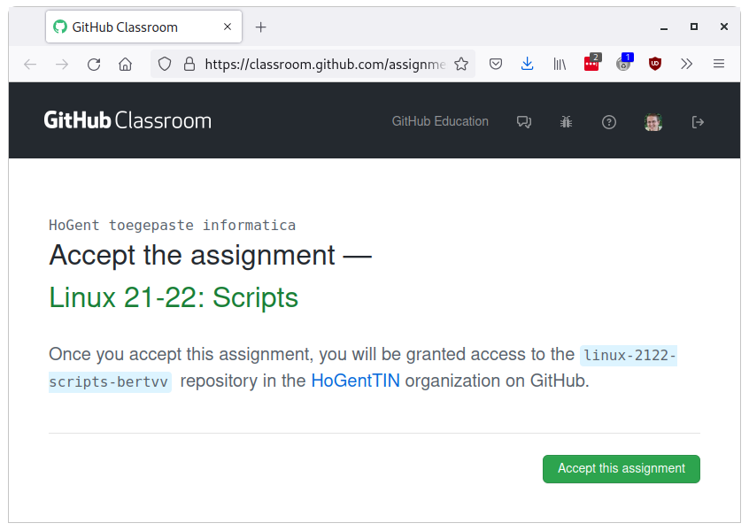
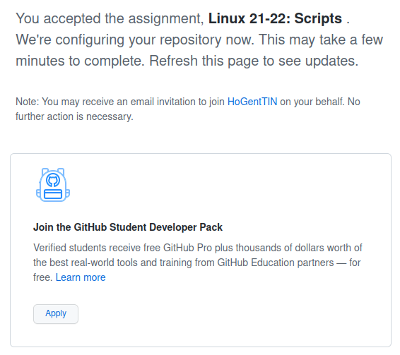
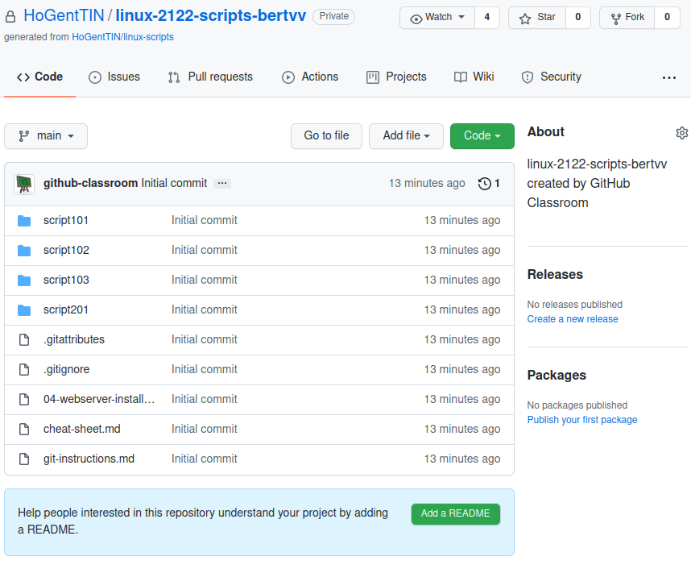
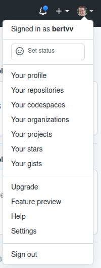
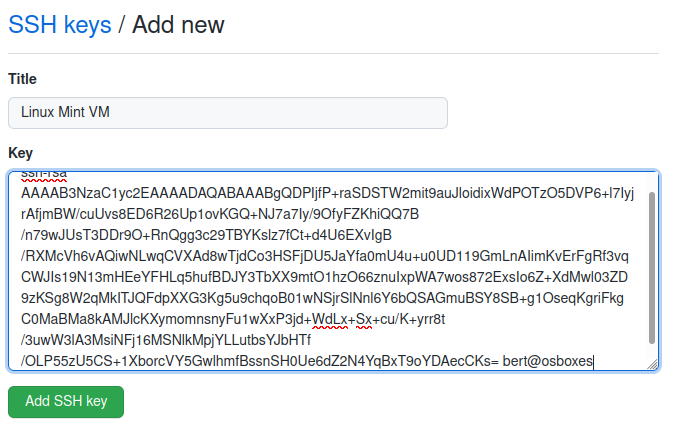
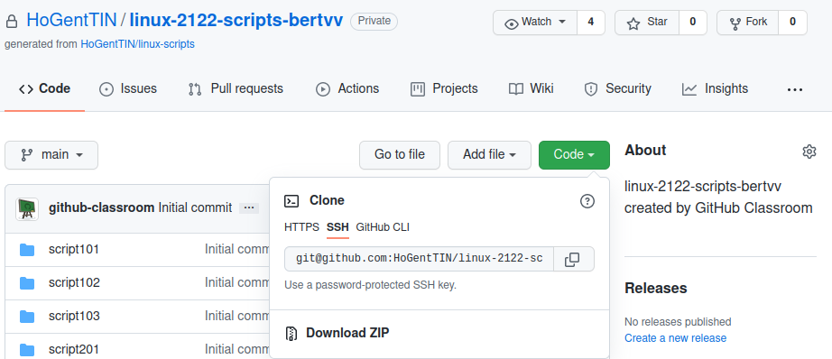

Linux
HOGENT toegepaste informatica
Andy Van Maele, Bert Van Vreckem
2021-2022
/etc/httpd/: configuratie Apache
/etc/httpd/conf/httpd.conf/etc/httpd/conf.d/*.conf/var/www/html/: Apache DocumentRoot/var/log/httpd/: logbestanden
access_logerror_log$ sudo systemctl start mariadb
$ sudo systemctl enable mariadb
$ sudo systemctl start httpd
$ sudo systemctl enable httpdstart: nu opstartenenable: automatisch opstarten bij booten/var/www/html/info.phpShow sockets: ss
netstat is obsolete, replaced by ss
netstat uses /proc/net/tcpss directly queries the kernel| Task | Command |
|---|---|
| Show server sockets | ss -l, --listening |
| Show TCP sockets | ss -t, --tcp |
| Show UDP sockets | ss -u, --udp |
| Show port numbers(*) | ss -n, --numeric |
| Show process(†) | ss -p, --processes |
(*) instead of service names from /etc/services
(†) root permissions required
$ sudo ss -tlnp
State Recv-Q Send-Q Local Address:Port Peer Address:Port
LISTEN 0 128 *:22 *:* users:(("sshd",pid=1290,fd=3))
LISTEN 0 100 127.0.0.1:25 *:* users:(("master",pid=1685,fd=13))
LISTEN 0 128 :::80 :::* users:(("httpd",pid=4403,fd=4),("httpd",pid=4402,fd=4),("httpd",pid=4401,fd=4),("httpd",pid=4400,fd=4),("httpd",pid=4399,fd=4),("httpd",pid=4397,fd=4))
LISTEN 0 128 :::22 :::* users:(("sshd",pid=1290,fd=4))
LISTEN 0 100 ::1:25 :::* users:(("master",pid=1685,fd=14))
LISTEN 0 128 :::443 :::* users:(("httpd",pid=4403,fd=6),("httpd",pid=4402,fd=6),("httpd",pid=4401,fd=6),("httpd",pid=4400,fd=6),("httpd",pid=4399,fd=6),("httpd",pid=4397,fd=6))Voorbeeld voor Apache:
$ sudo journalctl
$ sudo journalctl -u httpd
$ sudo journalctl -flu httpd
$ sudo tail -f /var/log/httpd/access_log
$ sudo tail -f /var/log/httpd/error_logjournalctljournalctl requires root permissions
adm or systemd-journal/var/log/messages (gone in Fedora!)/var/log/httpd/access_log and error_log| Action | Command |
|---|---|
| Show latest log and wait for changes | journalctl -f, --follow |
| Show only log of SERVICE | journalctl -u SERVICE, --unit=SERVICE |
Match executable, e.g. dhclient |
journalctl /usr/sbin/dhclient |
Match device node, e.g. /dev/sda |
journalctl /dev/sda |
| Show auditd logs | journalctl _TRANSPORT=audit |
| Action | Command |
|---|---|
| Show log since last boot | journalctl -b, --boot |
Kernel messages (like dmesg) |
journalctl -k, --dmesg |
| Reverse output (newest first) | journalctl -r, --reverse |
| Show only errors and worse | journalctl -p err, --priority=err |
| Since yesterday | journalctl --since=yesterday |
Filter on time (example):
journalctl --since=2018-06-00 \
--until="2018-06-07 12:00:00"Much more options in the man-page!
ip a
Hou je wachtwoorden goed bij!
$ mysql -uroot -pR2rrbLV02TA1hAjN mysql
...
MariaDB [mysql]> SHOW DATABASES;
MariaDB [mysql]> SELECT user,password from user;
MariaDB [mysql]> quit-uroot: inloggen als MariaDB-root-pR2rrbLV02TA1hAjN: gekozen wachtwoord
-p)mysql: inloggen op database mysqlBij uitvoeren van script zijn opties en argumenten beschikbaar via variabelen, positionele parameters
| Variabele | Betekenis |
|---|---|
${0} |
Naam script |
${1}, ${2}, … |
Eerste, tweede, … argument |
${10} |
Tiende argument (accolades verplicht!) |
${*} |
Alle argumenten: ${1} ${2} ${3}... |
${@} |
Alle argumenten: "${1}" "${2}" "${3}"... |
${#} |
Aantal positionele parameters |
Het commando shift schuift positionele parameters op naar links:
${1} verdwijnt${2} wordt ${1}${3} wordt ${2}echo "$?"$(( ... )) is arithmetic expansion
Itereren over een lijst
“Klassieke” for-lus, komt slechts uitzonderlijk voor
while)for)Ga naar Chamilo, volg de link om een Github-repo aan te maken.


https://github.com/HoGentTIN/linux-2122-scripts-USERNAME

Git moet al geïnstalleerd zijn!
osboxes@osboxes:~$ ssh-keygen
Generating public/private rsa key pair.
Enter file in which to save the key (/home/bert/.ssh/id_rsa):
Created directory '/home/bert/.ssh'.
Enter passphrase (empty for no passphrase):
Enter same passphrase again:
Your identification has been saved in /home/bert/.ssh/id_rsa
Your public key has been saved in /home/bert/.ssh/id_rsa.pub
The key fingerprint is:
SHA256:S/WtkPaCSXWK/oqs9lywV6XnMf8nYmYMZ4Io1lx8fS4 bert@osboxes
The key's randomart image is:
+---[RSA 3072]----+
| |
| |
| . o.o |
| o+.B... |
| o.oSoB =o. |
| o +*.*o=E=. |
| . .. B .*+.. |
| .o + . .* ...|
| ..o= ...+ . .o|
+----[SHA256]-----+~/.ssh/id_rsa.pub en kopieer de volledige inhoud
Plak in het “Key” veld:

Klik “Code”, SSH, Kopieer de URL:

osboxes@osboxes:~$ git clone git@github.com:HoGentTIN/linux-2122-scripts-bertvv.git
Cloning into 'linux-2122-scripts-bertvv'...
The authenticity of host 'github.com (140.82.121.4)' can't be established.
RSA key fingerprint is SHA256:nThbg6kXUpJWGl7E1IGOCspRomTxdCARLviKw6E5SY8.
Are you sure you want to continue connecting (yes/no/[fingerprint])? yes
Warning: Permanently added 'github.com,140.82.121.4' (RSA) to the list of known hosts.
remote: Enumerating objects: 28, done.
remote: Counting objects: 100% (28/28), done.
remote: Compressing objects: 100% (25/25), done.
remote: Total 28 (delta 1), reused 27 (delta 1), pack-reused 0
Receiving objects: 100% (28/28), 17.54 KiB | 8.77 MiB/s, done.
Resolving deltas: 100% (1/1), done.osboxes@osboxes:~$ git config --global user.name "VOORNAAM NAAM"
osboxes@osboxes:~$ git config --global user.email "VOORNAAM.NAAM@student.hogent.be"
osboxes@osboxes:~$ git config --global push.default simple~/linux-2122-scripts-USERNAMEgit statusgit add .git commit -m "Beschrijving wijzigingengit pushMaak een bestand README.md met deze inhoud:
Commit, push naar Github, bekijk het resultaat op github.com!
Start met oefeningenreeks script102
cd ~/linux-2122-scripts-USERNAME/script102Opgave: script102-rapport.md of Chamilo-leerpad
Controleer je oplossingen met:
./test/runtests.sh